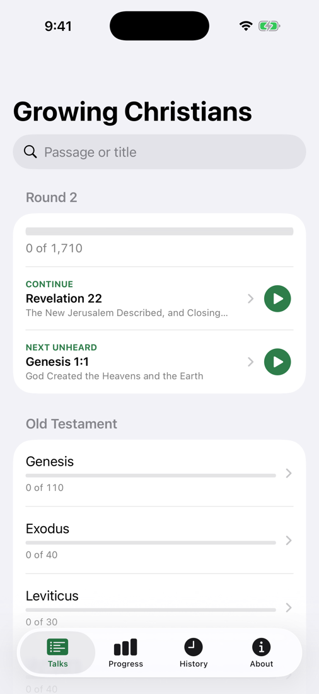
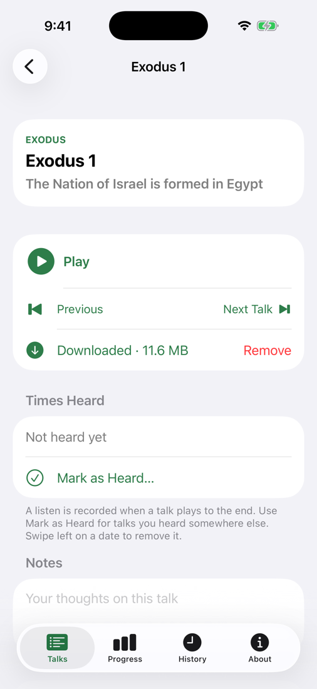
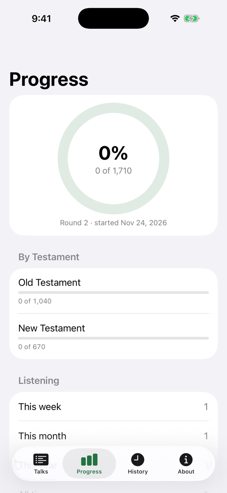

Using the Growing Christians app
Listen to all 1,710 Talks for Growing Christians, keep track of every talk you've heard and when, and work your way through the whole Bible — then start again. Everything below works the same on iPhone and Android unless it says otherwise.
🤖Install on Android
The Android app isn't in the Google Play Store yet, so you install it straight from this website. It takes about a minute.
- On your Android phone, open this site and tap Download for Android on the
home page. Your phone downloads
GrowingChristians.apk(about 20 MB). - Open the downloaded file — tap the notification, or find it in your Downloads / My Files app.
- The first time, Android says your browser isn't allowed to install apps. Tap Settings, turn on Allow from this source, then go back.
- Tap Install. If Google Play Protect warns that it doesn't recognize the app, tap More details → Install anyway. (That warning appears for any app that doesn't come from the Play Store.)
- Tap Open. You'll find Growing Christians with your other apps — a green icon with an open Bible and a sprout.
Needs Android 8 or newer.
📱Install on iPhone
The iPhone app is being tested through Apple's TestFlight before it goes to the App Store. To try it now, ask for a TestFlight invitation. You'll get an email:
- Install the free TestFlight app from the App Store.
- Open the invitation email on your iPhone and tap View in TestFlight.
- Tap Accept, then Install.
Needs iOS 26 or newer.
🧭The four tabs
- Talks — your progress, a quick way to continue, and all 66 books of the Bible.
- Progress — how far you've come this round, by testament, and how much you've been listening.
- History — every talk you've finished, with the date, newest first.
- About — the ministry's website, Donate, downloads, backup, and the app version. This is also where the app's settings live.
Whenever a talk is loaded, a mini player sits just above the tabs: the passage and title, a 15-second rewind button, and play/pause. Tap it to open the talk.
📖Finding a talk

The top of the Talks tab shows how many talks you've heard this round, then two shortcuts:
- Continue — the talk you were partway through.
- Next Unheard — the first talk, in Bible order, that you haven't heard yet this round.
Tap the green ▶ to play right away, or the row to open the talk.
Below that are the books, Old Testament then New, each with its own progress bar. A gold seal means you've heard every talk in that book.
Search (at the top) finds talks by passage or title — try John 3 or prayer.
Inside a book
A book shows its progress, a Next in … shortcut, and every talk in order. The mark beside each talk tells you where you are:
- ✔︎Green check — heard this round. The date you last heard it shows under the title.
- ◐Half circle — started but not finished. It will pick up where you stopped.
- ○Empty circle — not heard yet this round.
- ×2A small ×2, ×3… badge means you've heard that talk more than once.
- ⬇︎A small download mark means it's saved on your phone for offline listening.
iPhone shortcuts
- Swipe a talk right → Heard It (marks it heard today).
- Swipe a talk left → Play.
Android
- Tap a talk to open it, then use Play or Mark as Heard.
▶️Playing a talk

Open any talk and tap Play. If you stopped partway through before, the button says Resume and shows where you'll pick up.
While it plays you get:
- a slider to jump anywhere, with time played and time left;
- ⟲ 15 back 15 seconds and 30 ⟳ ahead 30 seconds;
- Speed: 0.75×, 1×, 1.25×, 1.5×, 1.75× or 2× (remembered for next time);
- Previous and Next Talk to move through the talks in Bible order.
Talks keep playing with the screen off or while you use other apps. You can pause, skip, and see the talk on your lock screen (and on Android, in the notification shade). Unplugging headphones pauses the talk.
The app remembers your place every few seconds, so if you're interrupted you can come back later and tap Resume — on that talk, from Continue on the Talks tab, or from the mini player.
⬇️Offline downloads
Save talks to your phone to listen without internet — in the car, on a plane, or to save mobile data.
Download one talk
Open the talk and tap Download for Offline (under Previous / Next). You'll see the percentage while it downloads, then Downloaded with its size. Downloaded talks play from your phone automatically.
Download a whole book
Open a book and tap the download button in the top-right corner:
- Download Unheard Talks — just the ones you haven't heard this round.
- Download All — every talk in the book.
- Remove Downloaded — delete this book's downloads.
Talks download one at a time. On iPhone, keep the app open while a batch downloads — iPhone pauses downloads when an app sits in the background for long.
Removing downloads
- One talk: open it and tap Remove.
- See them all: About → Downloads → Manage Downloads lists every downloaded talk and the space it uses. Remove one (swipe left on iPhone, tap × on Android) or tap Delete All Downloads.
Remove automatically after listening
In About → Downloads, the switch Remove after I finish a talk (on to start with) deletes a downloaded talk's file as soon as it plays to the end. Download a book for a trip and the space frees itself up as you go. Turn it off if you'd rather keep downloads until you remove them.
✅What counts as heard
A talk is recorded as heard — with today's date and time — when it plays all the way to the end. Stopping partway doesn't count; you'll see the half circle and can resume later.
Each talk's page has a Times Heard list showing every date you finished it, so you can see when you heard it the first time and every time after.
Mark as Heard
Heard a talk somewhere else — on the radio, at church, on the website? Open it, tap Mark as Heard…, and pick the date (any day up to today). If you don't remember exactly, any date is fine.
Remove a date
Marked one by mistake? In Times Heard, swipe the date left (iPhone) or tap its × (Android).
📊Progress & rounds

The Progress tab shows:
- a ring with the percentage of all 1,710 talks you've heard this round;
- progress for the Old Testament and New Testament;
- Listening: how many talks you finished this week, this month, this year, and all time, and how many you've heard more than once;
- Past Rounds, once you've started over.
Start Over (a new round)
When you've heard them all — or any time you want a fresh start — tap Start Over at the bottom of the Progress tab. Round 2 begins with every talk unchecked so the progress bars fill up again.
Nothing is erased. Every date you heard every talk stays in History and in each talk's Times Heard list (marked with its round). Only listens from the current round fill the progress bars.
🕘History
The History tab lists every talk you've finished, newest first, grouped by month — the day, the passage, and the title, plus “Heard 3 times” for repeats. It answers “When did I hear that?” Tap any entry to open the talk.
📝Notes & study notes
Every talk has a Notes box for your own thoughts. It saves as you type.
Study Notes & Printed Version opens that talk's page on growingchristians.org, with background notes, questions, and a printable transcript from the ministry.
💾Backup & new phones
Your listening history is stored only on your phone. There's no account and nothing is sent anywhere. That also means if you delete the app, your history is deleted with it — so make a backup now and then.
Export a backup
About → Export Backup creates a small file named like
2026-11-25_0930_GrowingChristians_Backup.json. Save it to Files / iCloud Drive (iPhone) or
Google Drive (Android), or email it to yourself.
Import a backup
About → Import Backup and pick the file. Importing adds what's in the file to what's already on the phone. It never deletes anything, so it's safe to import the same file twice.
💚Supporting the ministry
The talks are a free gift from Growing Christians Ministries. If they bless you, consider supporting the ministry: About → Donate to Growing Christians opens the ministry's own donation page in your web browser. Nothing is paid or collected inside the app.
❓Questions
I listened to a talk but it isn't checked.
A talk only counts once it plays to the very end. Open it and tap Resume to finish it, or use Mark as Heard….
A talk won't play.
Check your internet connection — talks stream from the ministry's website unless downloaded. Then try again, or download the talk while you have Wi-Fi.
Does it work without internet?
Browsing, your history and progress, and downloaded talks all work offline. Playing a talk that isn't downloaded needs internet.
I want to start completely fresh.
To restart the progress bars but keep your history, use Start Over. To erase everything, delete the app and install it again.
I'm getting a new phone.
Export a backup on the old phone, install the app on the new one, then Import Backup.
Is this app from Growing Christians Ministries?
No. It's an independent app made by a listener to help keep track of the talks. The talks themselves — and all rights to them — belong to Growing Christians Ministries.
How do I get help or ask for an iPhone invitation?
Email azbarks@gmail.com.